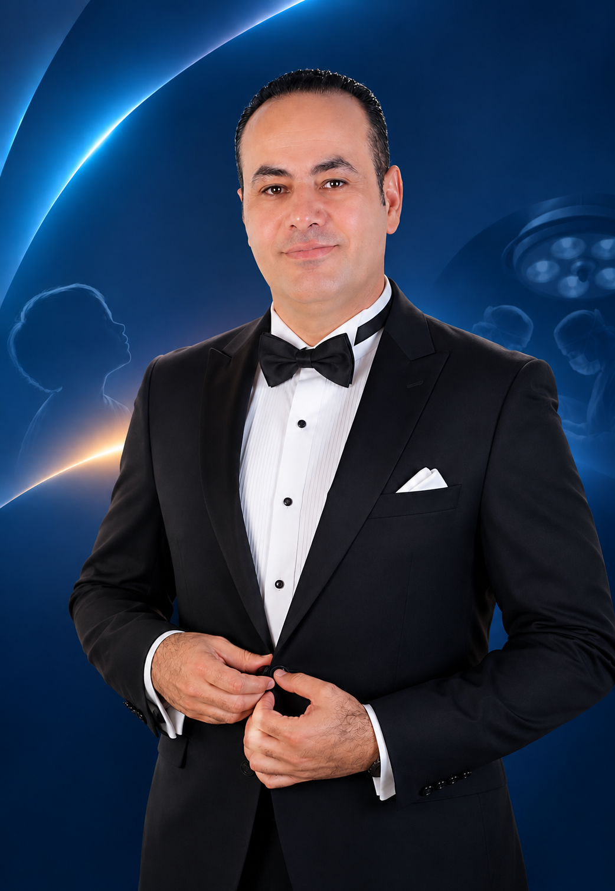
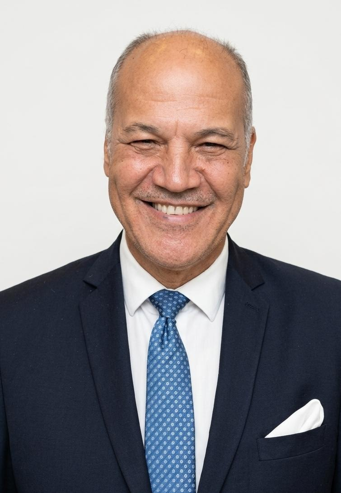

CONFERENCE PRESIDENT
Prof. Dr. Hany Embaby
Consultant of Pediatric Surgery · MRCS
INTERNATIONAL CONFERENCE
ON PEDIATRIC SURGERY
From Surgical Innovation
to Healthcare Governance.
Two complementary days connecting clinical progress with responsible healthcare governance, practical learning and sustainable services.
14–15 January 2027
Princess Fatma Academy, Cairo, Egypt
International
Experts & Professionals
THE COUNTDOWN BEGINS
14–15 January 2027 · Cairo, Egypt
CONFERENCE LEADERSHIP

CONFERENCE PRESIDENT
Consultant of Pediatric Surgery · MRCS

HONORARY PRESIDENT
Professor & Head of Pediatric Surgery
NEW HORIZON 2027
Discover the scientific programme and strategic discussions, then book your place below.
FRIDAY · 15 JANUARY 2027
A full day of scientific sessions, innovation, research and professional exchange.
| Time | Scientific Session / Topic | Speaker / Participants | Duration |
|---|---|---|---|
| 09:00 – 09:20 | The Future of Pediatric Surgery Emerging needs, technologies and clinical priorities | Sameh Shehata | 20 min |
| 09:20 – 09:40 | Artificial Intelligence in Pediatric Surgery Decision support, planning and the surgical workflow | Mohamed Albarbary | 20 min |
| 09:40 – 10:00 | From Innovation to Clinical Impact Evidence, safety and adoption | Hany Embaby | 20 min |
| To Be Announced | Keynote Panel and Audience Discussion Future priorities and responsible implementation | Mahmoud Marie | TBA |
| CHAIRPERSONSSherif Shehata · Almotazz Altyyeb · Sherif Kaddah · Ihab Alshafie | |||
| 10:00 – 11:00 | Coffee Break & Networking | — | 60 min |
| 11:00 – 11:20 | Minimally Invasive Innovations New instruments, platforms and surgical approaches | Tamer Ashraf | 20 min |
| 11:20 – 11:40 | Hybrid Techniques in Pediatric Surgery Combining surgical, endoscopic and image-guided approaches | Ahmed Khairy | 20 min |
| 11:40 – 12:00 | Artificial Intelligence in Pediatric Surgical Research Study design, data quality and critical appraisal | Ahmed Meleha | 20 min |
| 12:00 – 12:20 | Innovative Procedures in Pediatric Surgery From a clinical problem to a reproducible technique | Mohamed Abohebah | 20 min |
| To Be Announced | Moderated Discussion and Session Transition | Mohamed Alsherbiny; Ahmed Alhaddad | TBA |
| PANELISTSAyman Hussein · Adham Alsaid · Mohamed Fathy · Mohamed Abdalaziz | |||
| 12:20 – 12:30 | Scientific Break | — | 10 min |
| 12:30 – 12:45 | Laser Applications in Pediatric Surgery Selected indications and technical considerations | Karim Massoud | 15 min |
| 12:45 – 13:00 | Ultrasound-Guided Interventions and Procedures Targeted access and procedural applications | Karim Sallam | 15 min |
| 13:00 – 13:15 | Innovations in Pediatric Endoscopy Diagnostic and therapeutic approaches | Khalid Alasmar | 15 min |
| To Be Announced | Fetal Surgical Innovations Emerging interventions and multidisciplinary care | Gaser Albeshry / Ramy Abbass | TBA |
| CHAIRPERSONSMohamed Aldebeiky · Samir Goudah · Hany Embaby · Hesham Sheir | |||
| 13:15 – 14:00 | Lunch Break | — | 45 min |
| 14:00 – 15:50 | Research Innovation and Surgical Video Presentations | — | 110 min |
| 15:50 – 16:00 | Scientific Wrap-up and Session Transition | — | 10 min |
| 16:00 – 17:00 | Global Opportunities in Pediatric Surgery | — | 60 min |
| To Be Announced | Scientific Awards & Closing Ceremony | — | — |
THURSDAY · 14 JANUARY 2027
Leadership dialogue and practical discussion on strengthening pediatric surgical services.
| No. | Strategic Session | Main Discussion Topics | Duration |
|---|---|---|---|
| 01 | Governance in Pediatric Surgery | Service accountability, decision-making, multidisciplinary coordination, quality review and continuous improvement. | 60 min |
| 02 | Clinical Guidelines in Pediatric Surgery | Clinical pathways, evidence-based practice, local resources, implementation and clinical audit. | 60 min |
| 03 | Sustainable Financing for Pediatric Surgery | Care pathway costs, sustainable funding, resource allocation and family financial protection. | 60 min |
| 04 | Investment Opportunities and Partnerships in Pediatric Surgery | Healthcare infrastructure, equipment investment, public-private partnerships and institutional collaboration. | 60 min |
| 05 | Prevention, Infection Control and Workforce Competence | Patient safety, infection prevention, healthcare workforce training and professional competence. | 60 min |
| 06 | A Safe Start for Every Child: Integrating Pediatric Surgery with Maternal and Child Health | Early detection of congenital anomalies, antenatal and postnatal referral, nutrition and family support. | 60 min |
| 07 | Building Trust and Digital Presence in Pediatric Surgery | Patient communication, medical content creation, digital presence, responsible marketing and child privacy. | 60 min |
| 08 | National Pediatric Surgery Network: From Proposal to Implementation | National referral network, service coordination, shared information and implementation roadmap. | 60 min |
| 09 | Role of the General Medical Syndicate in Supporting the Specialty | Professional representation, ethical practice, public trust and protection of professional practice. | 60 min |
PRACTICAL LEARNING · JANUARY 2027
Explore each workshop, review its focus areas, and add it to your registration if you wish.
10 January 2027
Detailed proposed training agenda — subject to faculty, equipment and operational confirmation.
| Time | Session & learning activities |
|---|---|
| 09:00–09:15 | Welcome, learning goals & baseline discussionOrientation to the programme, participant experience and practical-session safety rules. |
| 09:15–10:00 | Laser Physics & Tissue InteractionWavelength, absorption and tissue effects; how different laser systems support different applications. |
| 10:00–10:45 | Laser Types, Equipment & SafetyDevice components, delivery systems and safety checks; eye protection, plume and fire-risk awareness. |
| 10:45–11:00 | Coffee Break |
| 11:00–11:45 | Clinical Applications in Pediatric SurgeryIndications, patient selection, limitations and evidence; overview of laser-assisted and endourological applications. |
| 11:45–12:30 | Operative Videos & Case-Based DiscussionCompare technique choices, recognise avoidable risks, and discuss complications and escalation. |
| 12:30–13:15 | Lunch Break |
| 13:15–14:45 | Supervised Practical Stations | 3 × 30 minutesA: identify equipment and perform a safety checklist. B: delivery-system handling on a model. C: controlled tissue-effect demonstration on an approved training medium. |
| 14:45–15:00 | Coffee Break |
| 15:00–16:00 | Application Planning & TroubleshootingSmall-group scenarios: select an appropriate approach, identify a safety concern, and respond to an equipment or workflow problem. |
| 16:00–16:30 | Skills Review, Questions & ClosingObserved safety-check exercise, knowledge review and individual feedback on further supervised training needs. |
Proposed agenda only. Practical activities use supervised simulation/training models; participation does not establish independent clinical competence or external accreditation.
11 January 2027
Detailed proposed training agenda — subject to faculty, equipment and operational confirmation.
| Time | Session & learning activities |
|---|---|
| 09:00–09:15 | Welcome, Objectives & Baseline ReviewFoundational skill goals, participant experience and training-model orientation. |
| 09:15–10:00 | Principles of Tissue Handling & Wound ClosureTissue preservation, wound-edge assessment, tension and basic planning for pediatric reconstructive care. |
| 10:00–10:45 | Suture Materials, Needles & Closure TechniquesMatch basic materials to tasks; instrument handling, knot security and controlled tissue approximation. |
| 10:45–11:00 | Coffee Break |
| 11:00–11:45 | Local Flaps: Rotation & AdvancementBasic design principles, blood-supply awareness, movement, tension and common planning errors. |
| 11:45–12:30 | Skin Grafts & Reconstructive ApplicationsSplit- and full-thickness graft concepts, donor/recipient-site principles and selected pediatric applications. |
| 12:30–13:15 | Lunch Break |
| 13:15–14:45 | Supervised Practical Stations | 3 × 30 minutesA: sutures and knots on pads. B: flap marking and movement on models. C: graft planning, orientation and fixation simulation. |
| 14:45–15:00 | Coffee Break |
| 15:00–16:00 | Case Planning & Integrated Skills PracticeApply closure, local-flap or graft principles to simulated defects; discuss congenital and acquired reconstructive problems and referral limits. |
| 16:00–16:30 | Skills Review, Feedback & ClosingObserved suturing task, review of a flap/graft plan and a personal plan for further supervised practice. |
Proposed agenda only. Practical activities use supervised simulation/training models; participation does not establish independent clinical competence or external accreditation.
18–19 January 2027
Detailed proposed training agenda — subject to faculty, equipment and operational confirmation.
| Time | Session & learning activities |
|---|---|
| 08:30–08:50 | Orientation & Baseline CheckTraining goals, equipment safety and initial knowledge review. |
| 08:50–09:10 | 01 Understanding the Laparoscopic SystemTrace the gas, light and image pathways and identify the role of each component. |
| 09:10–09:45 | 02 Insufflation from ZeroPressure, flow, resistance and leakage; interpret changing readings on a training model. |
| 09:45–10:25 | 03 Inside the InsufflatorGas inlet, regulation, control and alarms; recognise a fault and discuss safe responses. |
| 10:25–10:40 | Break |
| 10:40–11:20 | 04 Inside the TelescopeOptical components, viewing angles, diameter and length; orient a telescope to a target. |
| 11:20–11:45 | 05 Light from Source to TissueLight source, cable and connections; distinguish poor illumination from an image-system problem. |
| 11:45–12:25 | 06 Inside the CameraCamera head, coupler and control unit; focus, white balance and basic image quality. |
| 12:25–12:55 | 07 Understanding the MonitorInputs, resolution, aspect ratio and display settings; recognise signal or display problems. |
| 12:55–13:25 | 08 Basic Surgical RecordingRecording connections and workflow; image quality, storage and responsible handling of clinical media. |
| 13:25–14:25 | Lunch Break |
| 14:25–15:55 | Practical Station Rotations 1 & 2Two 45-minute rotations, including transition, through the four stations described below. |
| 15:55–16:10 | Break |
| 16:10–17:40 | Practical Station Rotations 3 & 4Two further 45-minute rotations so each group completes all four stations. |
| 17:40–18:30 | Troubleshooting Challenge & FeedbackTeam scenarios, observed setup tasks, correction of errors and preparation for Day 2. |
| Time | Session & learning activities |
|---|---|
| 08:30–08:45 | Day 1 RecapReview equipment and image-system principles; set individual practice goals. |
| 08:45–09:15 | 09 Instrument AnatomyHandles, rotation, shafts, insulation, joints and jaws; select and inspect an instrument. |
| 09:15–09:40 | 10 Access Ports and SealsPort components, valves and diameter compatibility; simulated leakage and access principles. |
| 09:40–10:10 | 11 Instrument HandlingFulcrum effect, depth control, bimanual coordination and non-dominant-hand tasks. |
| 10:10–10:25 | Break |
| 10:25–10:55 | 12 Ergonomics and TriangulationPosition the operator, monitor and ports; reduce collision and unnecessary movement. |
| 10:55–11:25 | 13 Tissue HandlingGentle grasping, traction, countertraction, exposure and cutting under vision. |
| 11:25–11:55 | 14 Surgical Energy from ZeroBasic energy modalities, insulation, thermal spread and residual-heat awareness. |
| 11:55–12:20 | 15 Camera Navigation and Target ControlMaintain the horizon, centre the target and keep instrument tips in view. |
| 12:20–13:00 | 16 Your First Laparoscopic SutureNeedle loading, controlled passage, thread management, approximation and an introductory knot. |
| 13:00–14:00 | Lunch Break |
| 14:00–15:30 | Practical Station Rotations 1 & 2Two 45-minute rotations, including transition; coached model-based practice. |
| 15:30–15:45 | Break |
| 15:45–17:15 | Practical Station Rotations 3 & 4Complete all four stations, with repeated practice and individual feedback. |
| 17:15–17:50 | Skills Review & Assessment BriefingFormative review of equipment, camera control, tissue handling and first-suture tasks. |
| 17:50–18:30 | 17 ICG and Fluorescence Guided SurgeryIntroductory principles, imaging-system requirements, applications and interpretation limits; demonstration or comparative video. |
Proposed agenda only. Practical activities use supervised simulation/training models; participation does not establish independent clinical competence or external accreditation.
23–24 January 2027
Detailed proposed training agenda — subject to faculty, equipment and operational confirmation.
| Time | Session & learning activities |
|---|---|
| 09:00–09:15 | Welcome & Baseline ReviewLearning goals, existing experience and the boundaries of focused ultrasound practice. |
| 09:15–10:00 | Ultrasound FundamentalsImage formation, probe types, frequency, depth, gain and orientation; safe equipment use. |
| 10:00–10:45 | Image Optimisation & Common ArtefactsAcquire a clear image, label orientation and distinguish artefact from a finding requiring review. |
| 10:45–11:00 | Coffee Break |
| 11:00–11:45 | Focused Abdominal AssessmentRelevant anatomy, structured focused examination and clinically useful questions for the pediatric surgeon. |
| 11:45–12:30 | Focused Scrotal AssessmentAnatomy, image orientation and basic Doppler concepts; limitations, urgent referral and escalation. |
| 12:30–13:15 | Lunch Break |
| 13:15–14:45 | Supervised Practical Stations | 3 × 30 minutesA: probe handling and image controls. B: focused abdominal anatomy. C: scrotal anatomy and image interpretation. Use training models and curated image sets. |
| 14:45–15:00 | Coffee Break |
| 15:00–16:00 | What the Surgeon Needs to KnowCase scenarios linking the focused finding to clinical assessment; uncertainty, documentation and referral. |
| 16:00–16:30 | Image Review & Day 1 FeedbackObserved image-orientation task, review of artefacts and preparation for guided-procedure simulation. |
| Time | Session & learning activities |
|---|---|
| 09:00–09:15 | Recap & Safety BriefingReview image optimisation, probe orientation and the practical-session safety plan. |
| 09:15–10:00 | Planning an Ultrasound-Guided ProcedureTarget and adjacent structures, preparation, sterile technique, documentation and scope-of-practice limits. |
| 10:00–10:45 | Needle Visualisation & Hand–Eye CoordinationIn-plane and out-of-plane concepts, needle-tip awareness and common simulation errors. |
| 10:45–11:00 | Coffee Break |
| 11:00–11:45 | Ultrasound-Guided Vascular AccessPediatric and neonatal considerations, vessel assessment, access planning and complication awareness. |
| 11:45–12:30 | Drainage & Other Image-Guided InterventionsIndications, safe-target selection, aspiration and drainage concepts, and when specialist support is required. |
| 12:30–13:15 | Lunch Break |
| 13:15–14:45 | Supervised Practical Stations | 3 × 30 minutesA: needle visualisation and target approach. B: simulated vascular access. C: simulated aspiration or drainage. All invasive tasks use phantoms. |
| 14:45–15:00 | Coffee Break |
| 15:00–16:00 | Integrated Scenarios & TroubleshootingPlan an approach, identify an unsafe trajectory, maintain visualisation and discuss escalation after difficulty. |
| 16:00–16:30 | Observed Skills Review & ClosingChecklist-based simulation review, image documentation, questions and an individual supervised-practice plan. |
Proposed agenda only. Practical activities use supervised simulation/training models; participation does not establish independent clinical competence or external accreditation.
Workshop fees: 1-day workshop 1,500 EGP · 2-day workshop 3,000 EGP.
INNOVATIVE IDEAS · PRACTICAL IMPACT
Share research and practical ideas that can make a difference to pediatric surgical care, emerging techniques, service improvement and surgical education.
YOUR NEW HORIZON EXPERIENCE
Register for the conference directly, or optionally add workshops to your request. Our team will confirm the details.
Access to both conference days · 14 & 15 January 2027
BOOKING SUMMARY
No workshops selected. You can still register for the conference.
QUESTIONS ABOUT REGISTRATION?
For group bookings, institutional participation or sponsorship enquiries, contact the NEW HORIZON team directly.